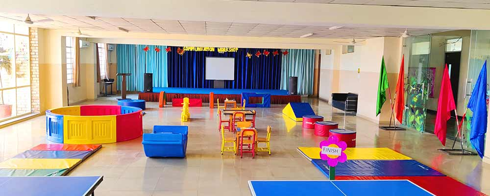
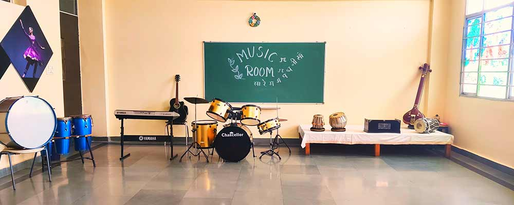

CAMPUS LIFE
Skating and Basketball court
Was estabilished in 2013
When i step onto the court it 's impossible for me to conjure any negative feelings with myself. I enter an endless state of self confidence and euphoria. The second I stepped onto the hardwood floor i 'm immediately filled with never ending joy of being where i belong. The first time i stepped on the hardwood floor and got to hold the basketball in my palms made me feel like i 'm in control. I can do no wrong on the court, every move i make, every shot i take is the right thing to do. The court and the ball have no lack of faith no fear nor pressure. The second i lace my shoes up and step onto the court all my struggles in life completly dissapear.
Library
Was built in 2015
Books play an essential role in everyone’s life. It helps to expand our capabilities, to know more about things that interest us. A library is a place that solves this problem. Great books on various themes, genres, and subjects can be found in only one place. The books that we need can be borrowed, and when we are done reading it, we return them for someone else to take it home. School Library is the place where kids are introduced to the magical world of books. Where they can read and know about anything, they want to know. It is common for school students to write essays on the topic of the School Library. We have provided such articles that the student can refer to.
Big Auditorium
Small Auditorium
School Auditorium
Was built in 2015
There was a beautiful hall called an Auditorium in our school it was very beautiful and beautiful furnished by skillful craftsman there was also a green room left of the stage many functions have held here the room was used by the teachers and students to held the all function and control it properly many dance students become ready there this is a best place of our school.
chemistry lab
Was built in 2014
Chemistry Laboratory at The Adhyyan School provides a platform for students to nurture the budding scientist within them. The laboratory is well furnished with the latest high technology interactive smart boards for a virtual real-life learning experience. the lab is having state-of-the-art devices like a fume hood, Distillation unit, Electronic weighing machine, Bunsen Berners, Breakers, and flasks. Concealed gas line and the safety devices such as fire fighting equipment, first aid kit, etc. Experienced teachers make it worth learning.
Computer Lab
Was built in 2016
ere students are provided with computer education right from the lower primary level. Information technology has become an integral part of our day-to-day life. Our computer lab is well equipped with the latest high-end systems and internet facilities. Computer education is imparted with the latest software and some important hardware through practicals by professional teachers.

School Canteen
Was built in 2013
The School Cafeteria provides a wide variety of wholesome and nutritious food to our students during break time. The cafeteria caters to the food requirements of TAS’s at different intervals meant for different classes. Housed in a spacious area the food is cooked under absolutely hygienic conditions, and care is taken to ensure the excellent quality of foodstuff offered for sale. Ranging from North Indian, South Indian, Chinese and Continental, there is food to satisfy the needs of each child’s taste buds. Recently a counter for bakery products was also introduced and it has proved to be a great hit among the students. During the break, there are two teachers on duty in the cafeteria to ensure smooth distribution and sale of food and also to maintain discipline in the cafeteria.
Dance Room
Music Room
Dance & Music Room
Was built in 2015
Dance, the movement of the body in a rhythmic way, usually to music and within a given space, to express an idea or emotions, release energy, or simply take delight in the movement itself.
The objective of having a music lab in our school is to develop a love for music in students, increase their understanding of music and help them to identify their area of interest and in turn shape their abilities and character.
Medical Room
Was built in 2013
Maximum possible care is being taken of children during school hours. A medical room has been specially formulated for this very purpose. Basic first aid facilities are provided for the students whenever required. Parents are kept informed of the health status of their wards. The school has a well-equipped dispensary for first aid and minor medical services. The school has links with all the local hospitals and doctors for any emergency. We make sure that the First Aid Kit is always available.